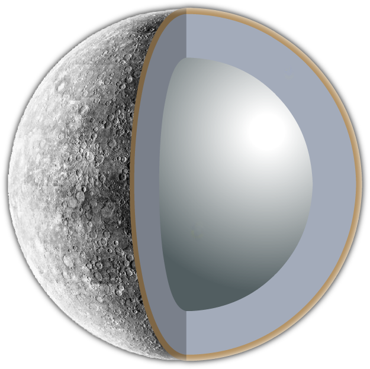

| HOMEPAGE | SISTEMA SOLARE | CORPI CELESTI | ||
| HOMEPAGE | SISTEMA SOLARE | CORPI CELESTI | ||
| paramentri orbitali | |
| semiasse maggiore |
57 909 176 km 0,38709893 UA |
| periodo orbitale |
87,96935 giorni (0,240847 anni) |
| perdiodo sinodico |
115,8776 giorni (0,317256 anni) |
| Velocità orbitale |
38,860 km/s (min) 47,360 km/s (media) 58,980 km/s (max) |
| satelliti | NO |
| anelli | NO |
| dati fisici | |
| diametro equatoriale | 4879,4 km | superficie | 7,5 x 1013 m2 |
| velocità di rotazione | 3,0256 m/s |
| temperatura | 100 K (-173 °C) |
Pianeta mercurio
Mercurio è il pianeta più vicino al Sole. Come tutti gli altri pianeti orbita in senso diretto, ad una distanza media di 0.3871 UA con un periodo siderale di 87.969 giorni terrestri. Visto da Mercurio il Sole ha un diametro apparente medio di 1.4°, 2.8 volte superiore a quello visibile dalla Terra, ma arriva a 1.8° durante il passaggio al perielio. Il rapporto fra il flusso solare al perielio e quello all'afelio è 2.3, da confrontare con l'1.07 della Terra. Il diametro del pianeta misura 4878 km, paragonabile a quello della Luna (3476 km), e 2.6 volte inferiore a quello della Terra. A dispetto delle piccole dimensioni geometriche. La rotazione di Mercurio attorno al proprio asse è in senso diretto (antiorario se visto dal polo nord dell'eclittica), ed ortogonale al suo piano orbitale non esistono le stagioni come sulla Terra o su Marte.
Il periodo di rotazione di Mercurio è di 58.646 giorni terrestri, pari a 2/3 del suo periodo orbitale: ogni tre rotazioni sul proprio asse il pianeta compie due orbite attorno al Sole. La misura della durata del periodo di rotazione di Mercurio è relativamente recente. Si pensava che Mercurio volgesse sempre la stessa faccia al Sole, come fa la Luna con la Terra. comparve un articolo di G. Colombo e I.I. Shapiro in cui si analizzava perché il periodo di rotazione fosse di 59 giorni e si ipotizzava che il valore esatto fosse i 2/3 del periodo di rivoluzione. Questa ipotesi fu confermata dal Mariner 10.
Il giorno solare di Mercurio, cioè l'intervallo di tempo fra due passaggi consecutivi del Sole sullo stesso meridiano, è pari a 176 giorni terrestri, il maggiore fra i pianeti del Sistema Solare. Si noti come il giorno solare di Mercurio sia maggiore del suo anno siderale, una particolarità unica fra i pianeti. L'uguaglianza fra il giorno solare di Mercurio e il periodo orbitale del Mariner 10 ha fatto sì che, ad ogni flyby, fosse possibile osservare lo stesso emisfero: è per questo motivo che conosciamo solo il 45% della superficie.
Gli studi sul pianeta
Il 3 novembre 1973 partiva da Cape Canaveral la sonda interplanetaria Mariner 10. Questa sonda, del peso di 503 Kg, era dotata di due pannelli solari, di un'antenna per le comunicazioni radio con la Terra, di una coppia di telecamere, di un magnetometromagnetometro
Strumetto di grado di individuare e misurare l’intensità di un campo magnetico , di un radiometro infrarosso, di uno spettroscopio ultravioletto, di un apparato propulsivo ad idrazina per le correzioni orbitali e di un sistema di stabilizzazione per mantenere costante l'orientazione azionando dei piccoli getti d'azoto.